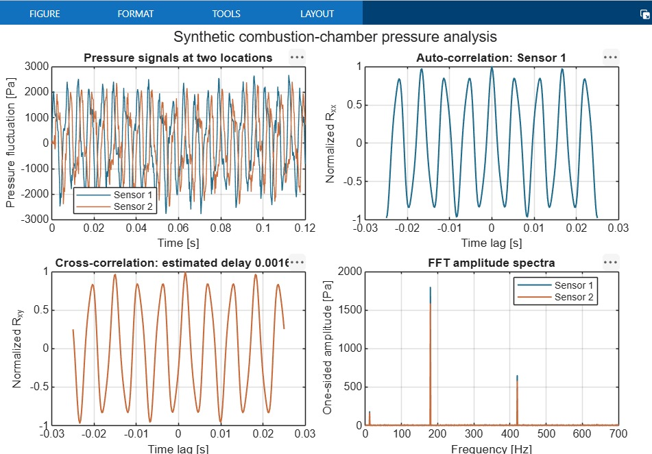

SELF-PROJECT 01
Pressure Signal Analysis Using Correlation & FFT
A simplified combustion-chamber signal scenario was created with two virtual pressure-sensor signals. The aim was to learn how signal-processing methods reveal periodic behaviour, frequency components and relative timing between measurement locations.
Auto-correlation highlights repeating patterns in a signal. Cross-correlation compares the two signals and estimates their relative time delay.
The Fast Fourier Transform converts the pressure history from the time domain into a frequency spectrum, making dominant frequency components easier to identify.

- Distinct spectral peaks appear around 180 Hz and 420 Hz in the constructed signals.
- Cross-correlation recovers an imposed relative delay of approximately 1.6 ms.
- Auto-correlation reveals the repeating structure associated with the dominant periodic component.
Data note: these are synthetic, physics-inspired signals generated in MATLAB to demonstrate the methods. They are not measured combustor data and do not establish combustion instability in a real system.